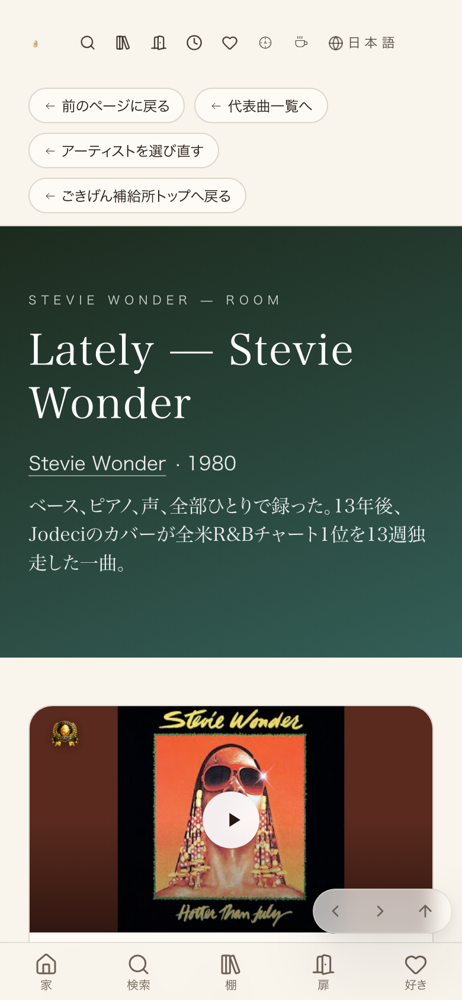
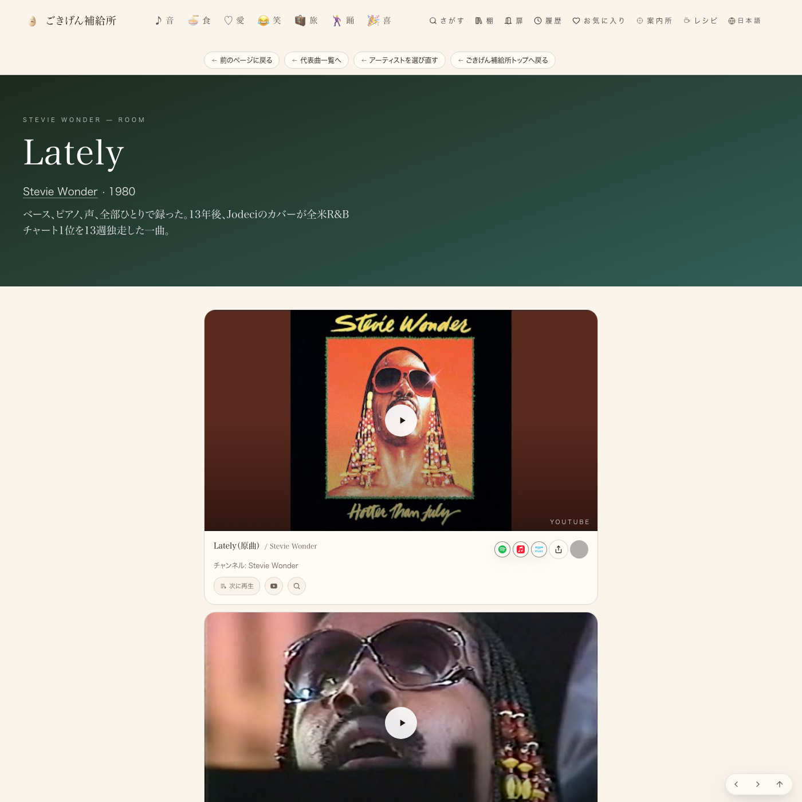

Lately本番・モバイル実測（バッジ左上に表示）

Lately本番・デスクトップ（メイン動画フル幅・コピー確認）

akiko見本・モバイル実測（比較用）
tools/oni_kantoku_badge_ratio.mjsで本番URLを headless Chrome 実測した結果、Lately・akiko両ページとも全バッジが目標比率±2pt以内、同じ行のカード高さ差0px、棚編集ボタンとの重なり0件でPASS。過去2回のAI検品リジェクトは、バッジがSupabase非同期取得後にクライアント側で描画される（静的HTMLには出ない）ため、JS実行なしの検品ではバッジ不在に見え、無関係な文字キャプション(コラボ欄のtext-[10px])を誤って旧実装の痕跡と読んだことが原因と判明（該当箇所はコード確認済み・バッジ本体ではない）。


| 確認項目 | 結果 |
|---|---|
| ①メイン動画フル幅(1・2・3並び) | 直った |
| ②カバー・パロディを本人動画と同サイズで2枚並び | 直った |
| ③コピー書き直し（静かなピアノの夜、を撤去） | 直った |
| ④バッジの大きさ・位置（短辺13.8%・左上固定） | 直った |
| ⑤サムネの上下余白比率・カード高さ揃え | 直った |
| ⑥棚編集ボタンとサムネ・タグの重なり | 直った |
| ⑦コラボ・共演・CM欄にバッジを付けられる | 直った |